Peugeot 3008-Характеристики
Peugeot 3008 збудований на платформі PF2, вперше був представлений у вересні 2008 року на Паризькому автосалоні. Випускається в 5-ти місному варіанті з травня 2009 року і продається на 5 ринках Європи (Франції, Німеччини, Італії, Іспанії, Бельгії, Голландії), а з листопада 2009 року у Великій Британії. За цей час до кінця 2009 року було продано 62 000 примірників. Також, з 2010 року, Peugeot 3008 продається в Туреччині. Автомобіль також продається в Китаї. В 2013 році автомобіль для китайського та європейського ринку модернізували, з цього часу автомобілі стали відрізнятись зовні.
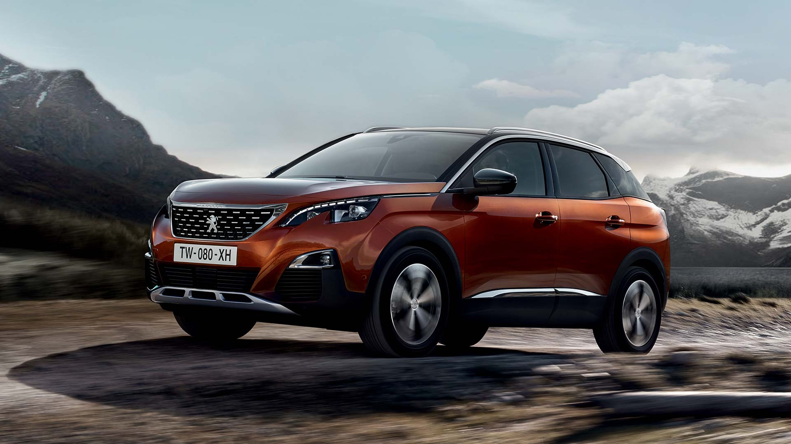19 жовтня 2010 року представлений оновлений GT-R. Модель отримала нові світлодіодні фари денного світла. Змінено геометрію підвіски і характеристики амортизаторів. Двигун тепер має 395 кВт (530 к.с.) при 6400 об/хв., а крутний момент до 612 Нм при 3200-6400 об/хв. В наш час він досягає максимальної швидкості близько 320 км/год. Ціна в наш час складає € 90 900.Новий Nissan GT-R (Ніссан GTR) був показаний публіці восени 2011 року. Модель отримала мінімальні косметичні зміни в екстер'єрі та інтер'єрі, а головне, потужність силового агрегату істотно зросла. Автомобіль має передню підвіску на подвійних поперечних важелях. Задня підвіска - багатоважільна, верхні важелі створені з легкого металу - алюмінію. GT-R оснащений амортизаторами Bilstein з електронним управлінням, що дозволяє регулювати жорсткість підвіски. Система повного приводу з електромагнітною муфтою подарує повну впевненість на шосе. Nissan GT-R оснащений повним набором інформаційно-розважальних опцій, в які входять преміум-аудіосистема BOSE, DVD-плеєр, БК, навігатор, система комунікації Bluetooth. Nissan GT-R 2011-го модельного року пропонується з модернізованим 3.8-літровим бензиновим двигуном V6. У порівнянні з попередньою модифікацією, потужність мотора зросла на 20 к.с., що відбилося на показниках динаміки: новий GT-R "вистрілює" до 100 км / год всього за 2,8 с. Незважаючи на чудову динаміку, Nissan GT-R має помірну "апетитом". У змішаному циклі спорткар споживає всього 11.8 л / 100 км. На російському ринку GT-R зумів знайти свого покупця. Ціна на новий Nissan GT-R досить висока, але набагато нижче собівартості багатьох конкурентів у класі.
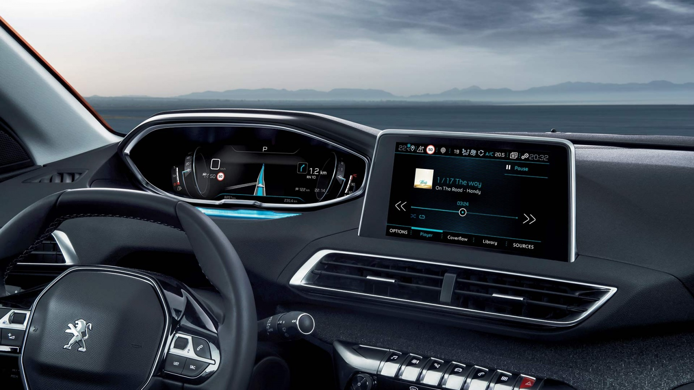Двигун: VR38DETT 6-циліндровий V-подібний, об'ємом 3,8 л, з двома турбонаддувами IHI, розташований попереду. Потужність: від 485 до 600 к.с. в залежності від року випуску і модифікації при 6400 об/хв. Кожен двигун збирається вручну. Трансмісія: повнопривідна ATTESA E-TS з механічно диференціалом, що блокується. Трансмісія включає два приводні вали, один передає потужність від двигуна до коробки передач, розташованої в задній частині автомобіля, для приводу задніх коліс, другий - від коробки до передніх коліс. Коробка передач: 6-ступінчаста роботизована BorgWarner з подвійним зчепленням. Час перемикання менше 0,15 с. Знаходиться в задній частині автомобіля. Ковані колісні диски з надлегкого алюмінієвого сплаву Гальмівна система: дискові 15" гальма Brembo з 6-поршневими супортами спереду і 4-поршневими ззаду Незалежна підвіска: Bilstein DampTronic.
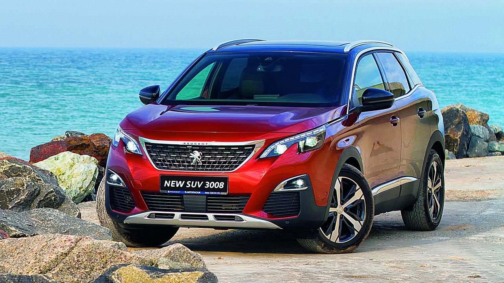Двомісне купе Nissan GT-R у 2017 році отримало новий капот, решітку радіатора, бампери, що позитивно відобразилось на фронтальному притискаючому зусиллі та управлінні. Салон може похвалитись декількома новими кнопками та 8.0-дюймовим сенсорним екраном. На рульовому колесі з’явились перемикачі швидкостей, а двигун надбав 20 к.с. Автомобіль представлений у двох моделях: Premium і Nismo. Базова модель «Premium» оснащена: шкіряними сидіннями з електроприводом, монітором заднього виду, двозонним клімат-контролем, 8.0-дюймовим екраном навігаційної системи та аудіосистемою «Bose» на 11 динаміків. Модель «Nismo» пропонує: більш потужний двигун, кращу підвіску, посилений кузов та додаткове охолодження гальм. Більшість опцій розподілено по пакетам. Пакет «Cold Weather» додає шини для всіх сезонів та спеціальну охолоджуючу суміш. Пакет «Interior» подбає про передні крісла з ручною обстрочкою та яскраві кольори салону. Окремо для моделі «Nismo» пропонується титанова вихлопна система. Купе GT-R 2017 оснащене 3.8-літровим V6 двигуном з подвійним турбонадувом у версіях на 565 та 600 к.с. Показники, які здатні присоромити навіть деякі V8 силові агрегати. Цікаво, що кожен двигун має особистий підпис розробника. Приємним фактом є ще й те, що уся ця потужність та вишуканість пропонується за привабливою ціною, для свого сегменту звісно
 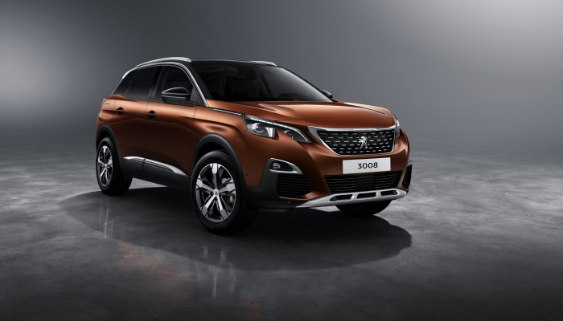
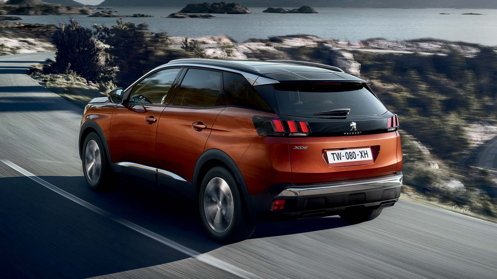
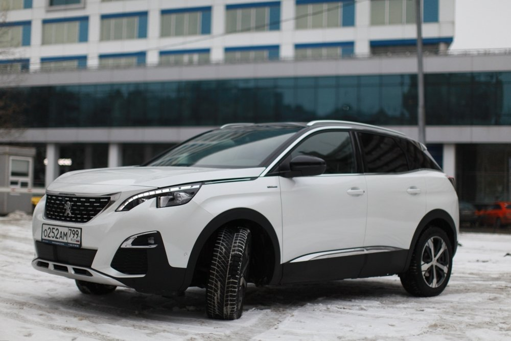
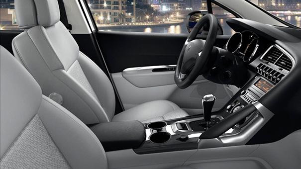
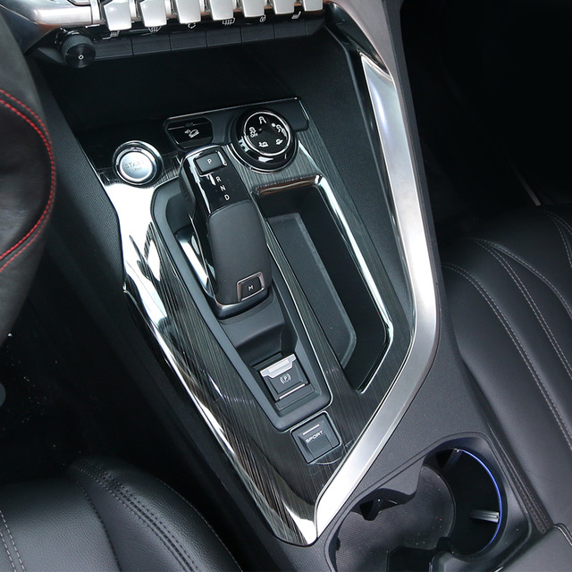
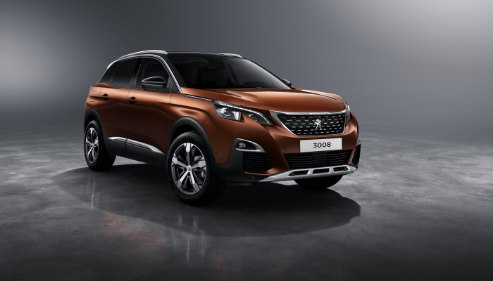
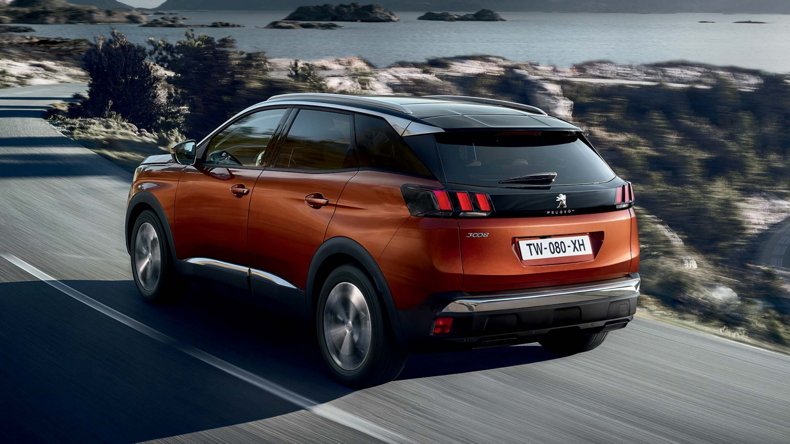
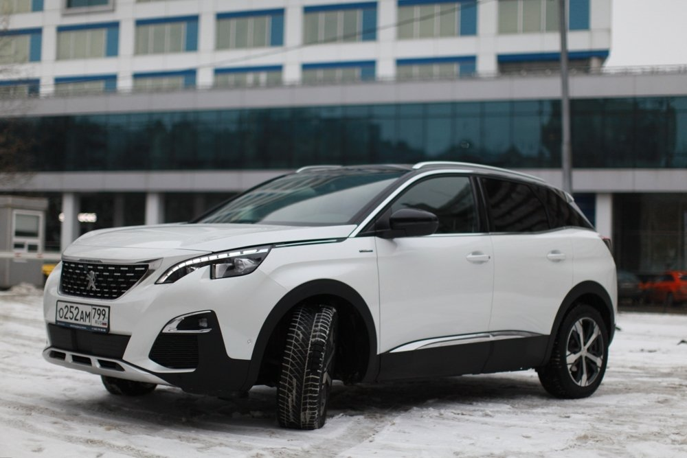
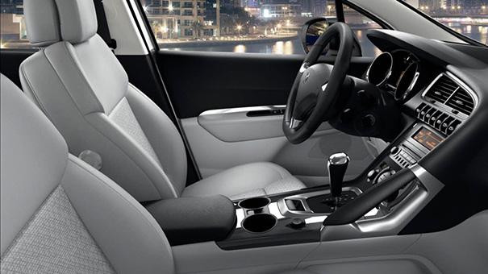
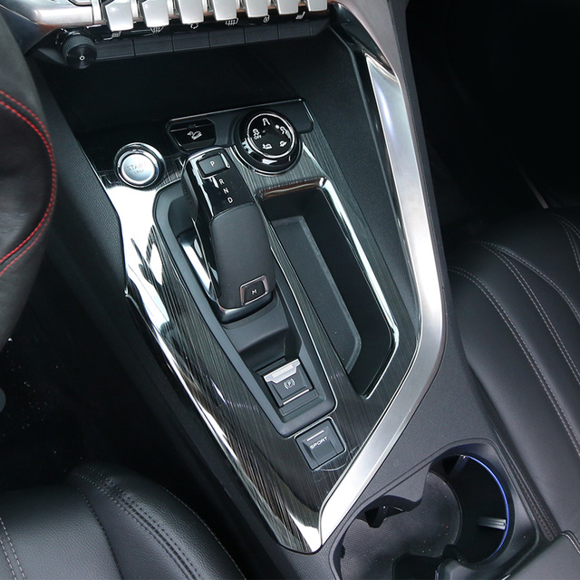